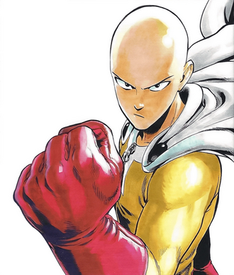
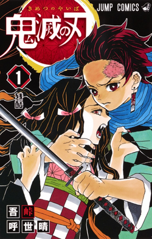

Sakamoto Days (estilizado com todas as letras em caixa alta; lit. "Os Dias de Sakamoto") é uma série de mangá japonesa escrita e ilustrada por Yuto Suzuki [ja]. Desde novembro de 2020, a série é publicada na revista shōnen Weekly Shōnen Jump da Shueisha, e até junho de 2025, seus capítulos foram reunidos em 22 volumes tankōbon. A obra também é disponibilizada simultaneamente em português através da plataforma online Manga Plus.
A história gira em torno de Taro Sakamoto, um assassino lendário que decidiu se aposentar e levar uma vida pacífica como um cidadão comum e dedicado à sua família. Contudo, essa tranquilidade é abalada quando inimigos e antigos aliados de sua época como assassino começam a aparecer em busca de vingança. Para proteger seus entes queridos, Sakamoto é obrigado a usar suas excepcionais habilidades de combate, enfrentando uma série de adversários, enquanto tenta manter a aparência de uma vida comum.
Uma adaptação de série de anime para televisão pela TMS Entertainment foi exibida de janeiro a março de 2025, com a segunda parte programada para estrear em julho do mesmo ano.
Em março de 2025, o mangá tinha mais de 8 milhões de cópias em circulação
Enredo
Taro Sakamoto foi um assassino de aluguel incomparável, conquistando uma fama legendária no submundo do crime, sendo tanto temido quanto admirado. No entanto, sua vida mudou quando se apaixonou à primeira vista por Aoi, uma balconista de loja de conveniência. Para que tivessem um relacionamento, Aoi impôs a ele a condição de abandonar a carreira de assassino e nunca mais matar. Sakamoto concordou, e após se aposentar, eles começaram a namorar, se casaram, tiveram uma filha chamada Hana e, eventualmente, abriram sua própria loja de conveniência familiar nos subúrbios de Tóquio.
Alguns anos depois, Sakamoto adotou uma vida humilde, mas também ficou obeso devido à relativa inatividade, embora ainda possuísse imenso poder. O mundo dos assassinos finalmente o encontrou, e muitos logo tentaram atacar a família Sakamoto, buscando vingança ou ressentindo-se de seu status de aposentado. Agora, com a ajuda de três outros ex-criminosos na loja de Sakamoto — o assassino clarividente Shin Asakura, a filha órfã de um senhor do crime Lu Xiaotang e o atirador Heisuke Mashimo — Sakamoto tem o dever de proteger sua família (ou morrer) do submundo, mantendo a política de não matar de Aoi.
Produção
Mangá
A ideia de juntar Taro Sakamoto com um personagem que lê mentes permitiu uma visão sobre as motivações do personagem e permitir que a comédia florescesse, já que Suzuki queria que Sakamoto fosse um personagem mais quieto e reservado. Segundo o editor Soshiro Ishikawa, Suzuki focou na legibilidade ao criar cenas de ação, e sua experiência no estilo de pintura Nihonga lhe permitiu criar layouts interessantes. Suzuki e Ishikawa se reuniam pessoalmente semanalmente para discutir como levar a história adiante, mas, após a pandemia de COVID-19, eles realizaram reuniões online.[2] Suzuki foi influenciado pelos trabalhos dos mangakás Katsuhiro Otomo, Takehiko Inoue e Hiroya Oku, bem como do diretor Christopher Nolan.[3] Ele se inspirou em filmes de ação como The Equalizer e a franquia John Wick.[2]
Suzuki originalmente desenhou histórias sombrias de one-shot. Porém, ao criar Sakamoto Days, ele optou por um tom mais descontraído para melhor atender às necessidades de serialização semanal. Sobre o conceito de Sakamoto ser um assassino aposentado, Suzuki afirmou que ficou fascinado pela ideia da força incrível de um homem gordo, e também pensou no que o levou a esse estado: "Por que ele é gordo? Porque ele se aposentou. Por que isso? Talvez porque ele se casou? Foi assim que eu fiz." Ele ficou particularmente intrigado com a ideia de um lutador forte e obeso, uma noção que foi parcialmente influenciada pelo filme de ação cômico Fei Lung gwoh gong. Quando se trata de cenas de ação, a Suzuki se esforça para envolver os leitores incorporando reviravoltas e surpresas inesperadas. Ele usa uma caneta analógica para desenhar ilustrações de personagens e trabalha com uma equipe de assistentes. O personagem Shin surgiu do interesse de Suzuki em explorar o potencial de seres superpoderosos que interagiam telepaticamente com Sakamoto. Lu, por sua vez, foi concebida como uma heroína assassina chinesa, refletindo o desejo de Suzuki de diversificar o elenco. Embora Suzuki admitisse que seus personagens às vezes eram difíceis de distinguir visualmente, ele achou Gaku o mais fácil de desenhar devido à sua personalidade independente. Suzuki disse que já planejou um final da série em 2022.
Anime
A adaptação para anime é dirigida por Masaki Watanabe [ja]. Watanabe observou que o design de Sakamoto refletia a expressividade do mangá original, ao mesmo tempo que distinguia suas duas formas: a versão gorda tinha um rosto simbolicamente deformado, enquanto a versão fina era mais realista; Watanabe enfatizou a personalidade contrastante e a rotina diária calma de Sakamoto, que contrastavam fortemente nas cenas de ação envolvendo seu físico obeso. O diretor também destacou os efeitos sonoros e performances vocais únicos de Shin, que foram criados sob sua direção. Refletindo sobre a narrativa, Watanabe observou que embora o programa fosse baseado na comédia, houve momentos ocasionais de violência inesperada, que ele considerou particularmente louváveis.[4] Embora Watanabe tivesse vasta experiência com mangás shōnen, ele achou Sakamoto Days um desafio único, pois pretendia equilibrar sequências de ação intensas com o tom mais leve estabelecido por Suzuki. Uma das cenas mais exigentes dos primeiros episódios envolveu uma luta na montanha-russa, que exigiu muito tempo para criar modelos 3D detalhados e gerenciar a paleta de cores vibrantes da cena. A animação foi feita no Clip Studio Paint e Adobe, incorporando texturas de papel para aprimorar o estilo visual das sequências de ação. Além disso, a equipe conduziu pesquisas em armas de fogo reais para garantir que fossem representadas com precisão na animação.[5]
Tomokazu Sugita dá a voz ao protagonista Taro Sakamoto, já tendo tido contato anterior com a série de mangá original. Ele foi inicialmente escalado para o papel de Kashima, mas, posteriormente, recebeu o convite para interpretar Sakamoto, valorizando as relações do personagem com sua família e amigos. Nobunaga Shimazaki dá vida a Shin Asakura e destaca que a aparente fraqueza do personagem, juntamente com sua falta de habilidades, apesar de ter mais de 20 anos, proporciona um contraste intencional com os colegas mais fortes e experientes, contribuindo para um elenco mais equilibrado e uma dinâmica mais cativante. Ayane Sakura é a voz de Lu Shaotang e se divertiu ao explorar as interações dinâmicas dessa personagem.[6]
Saitama (One Punch-Man)

Capa do primeiro volume de Sakamoto Days
Saitama (サイタマ) é o protagonista da série de mangá One Punch-Man criada por One. Saitama, um super-herói independente e que sonha em se tornar famoso, vem da Cidade Z e realiza feitos heróicos como hobby. Por três anos seguidos, Saitama treinou o suficiente para se tornar o ser mais forte e pode derrotar qualquer inimigo com um único soco. No entanto, por causa de seu poder incomparável, ele não teve nenhum desafio real de seus supervilões ou adversários criminosos, deixando-o insatisfeito e entediado. Ele se torna o mentor relutante de Genos, um ciborgue em busca de vingança contra outro ciborgue que matou sua família e destruiu sua cidade natal, depois que Saitama derrota um monstro que derrotou Genos. Com Genos, Saitama aprende sobre a Hero Association, uma organização profissional que combate monstros e protege a Terra.
O personagem foi criado por One como parte de um webcomic envolvendo um estilo alternativo de super-herói que já começou como o mais forte do mundo e a maioria de suas histórias envolviam tarefas diárias. Para a serialização do mangá, Saitama foi ilustrado por Yusuke Murata.
Em outubro de 2015, uma adaptação de anime foi lançada. Na adaptação de anime, Saitama é dublado por Makoto Furukawa em japonês e Yuri Chesman na dublagem brasileira.
Criação
O autor japonês de mangá One se interessou em criar um super-herói cômico que já fosse o mais forte do mundo.[2][3] Ele queria se concentrar em diferentes aspectos da narrativa do que aqueles normalmente usados em histórias de super-heróis padrão, como problemas cotidianos. Ele disse:
“ Socos são muitas vezes bastante inúteis contra os problemas da vida. Mas dentro do universo de One Punch-Man, eu fiz de Saitama um tipo de cara que era capaz de adaptar sua vida ao mundo que o cercava, armado apenas com seu imenso poder. Os únicos obstáculos que ele enfrenta são coisas mundanas, como ficar sem dinheiro. ”
— One, [3]
One surgiu com o design simplista de Saitama ao pensar em como "o mundo está cheio de heróis de aparência legal".[4]
O enredo do mangá era que Saitama ficou entediado com seu estilo de vida de super-herói e, em vez disso, recorreu a lidar com a vida cotidiana.[5] Do ponto de vista de One, um herói não é legal por ser forte ou forte, em vez disso, é a mentalidade de Saitama e como ele é capaz de entender as mentalidades de outras pessoas.[3] One teve dificuldades em desenhar cenários para Saitama devido ao quão poderoso ele era; tudo o que Saitama faria seria imediatamente dar um soco no problema. One sentiu que a jornada de Saitama tornou a história interessante; a única parte difícil é fazer seus aliados não parecerem muito fracos.[5]
O artista Yusuke Murata inicialmente o desenhou de uma forma "legal" ao lado de todo o elenco. Ele tentou fazer Saitama parecer bonito e acrescentou estrelas em seus olhos, mas todas essas ideias foram descartadas; Murata mudou devido a One pretender que Saitama fosse o oposto completo. No entanto, ele se divertiu ao desenhar o personagem.[5] A expressão vazia que Saitama tende a fazer foi feita intencionalmente para efeito cômico. Murata também elaborou que, embora seja difícil se relacionar com personagens poderosos na ficção, a maneira como One escreveu Saitama conseguiu fazê-lo bem.[5]
Vozes
Saitama é dublado por Makoto Furukawa na versão japonesa[6] e por Yuri Chesman na versão brasileira.[1] Furukawa soube da série pela primeira vez graças a um amigo que tinha o mangá. Ele sentiu que a história, na qual cada episódio é concluído em um pequeno número de episódios, e que Saitama sempre termina com um golpe rápido para derrotar o inimigo no final, é simples, mas muito interessante. Além disso, sua primeira impressão de Saitama foi tão forte que ele estava preocupado se seria capaz de interpretá-lo. Ele ficou surpreso por ser realmente o herói mais forte porque a lacuna entre sua vida diária e a luta era atraente.[7] Furukawa o chamou de "complexo" devido à sua falta de motivação e não ser atento o suficiente, enquanto suas tarefas são parte do que o torna charmoso, o que o torna identificável.[8] O ator explicou que Saitama tem dois tons diferentes com base nas cenas em que está envolvido, tornando-o legal e não legal.[9]
Chesman, que dubla o Saitama na dublagem brasileira, começou fazendo teste na voz de Genos, o fiel escudeiro do careca. Chegou a ser aprovado na primeira bateria de teste, mas na segundo não. Entretanto, uma semana depois, ligaram para ele para fazer bateria de teste no Saitama. Ele conseguiu passar nos testes para a voz do protagonista. Portanto, dublou o Saitama.[10]
Aparições
Em One Punch-Man
Saitama é um homem careca de 25 anos que está entediado de lutar porque ele é capaz de derrotar inimigos sem esforço com um único soco.Vol. 1 Ele mora em um apartamento na Cidade Z. Três anos antes do início da série, quando ele ainda tinha cabelo, Saitama estava procurando emprego quando derrotou o poderoso supervilão Crablante que tentou matar uma criança com um queixo de bunda.Cap. 2 Saitama diz que se tornou um herói "por diversão".Cap. 5 Suas habilidades consistem principalmente em habilidades físicas ampliadas a um grau imensurável: força é o verdadeiro poder de Saitama, com velocidade, resistência e durabilidade sendo meros efeitos colaterais. Ele atribui isso a um regime de treinamento diário (100 flexões, 100 abdominais, 100 agachamentos, uma corrida de 10 km, alimentação saudável e abstenção do uso do ar condicionado ou aquecedor para reforçar sua fortaleza mental.) (Ele também menciona o treinamento mesmo quando seu corpo estava ferido e fazia estranhos sons de estalo). Três anos desse treinamento espartano levaram Saitama ao seu limite, tornando-o evidentemente imbatível.Cap. 11 No início da série, ele pega um discípulo e colega de quarto, Genos.Vol. 1
Embora ele tenha quebrado todos os recordes físicos no exame de admissão de Heróis por grandes margens, Saitama entra na Associação de Heróis com uma pontuação de 71, dando a ele uma das classificações mais baixas na Associação de Heróis. Isso se deve ao seu desempenho miserável no exame mental.Web Cap. 16-17, Cap. 16 Ele logo sobe na classificação realizando muitas ações, embora muitos de seus esforços não sejam reconhecidos por causa de danos colaterais ou super-heróis de nível superior recebendo mais crédito. Isso inclui derrotar o furioso supervilão/assassino ninja conhecido como Sonic Velocidade do Som (que se tornou seu improvável rival) e destruir um meteoro semelhante a Chicxulub, cada um com um único soco. No arco atual do webcomic de One, ele é rank 39 da Classe A. Independentemente de sua classificação, ele não se importa em dar crédito aos outros, como demonstrado em suas ações após a luta contra o Rei do Mar Profundo. No arco da história Dark Matter Thieves, ele não se deixa abalar pela telecinese de um poderoso esper, exibindo ainda mais sua resistência. Este arco também foi uma das únicas vezes em que ele usou seu "soco sério", derrotando o líder conquistador mundial dos alienígenas, Lord Boros. Também foi revelado que o poder de Saitama pode continuar a crescer sem limites, como demonstrado durante sua luta com Cosmic Garou, com este último deixando-o para trás na escala de poder através de cada golpe trocado. Através de várias circunstâncias, ele forma amizades com Mumen Rider, Bang, King e Blizzard. Seu nome de super-herói na associação é Careca de Capa (ハゲマント, Hagemanto).Cap. 45 Muitos personagens, como Garou e Sonic, buscam derrotar Saitama. Como ele é o personagem mais forte do anime, há personagens que veem derrotá-lo como uma conquista que desejam realizar para aumentar seus egos. No entanto, todos que vêm contra Saitama ficam aquém devido à falta de habilidades em comparação a ele.
O personagem também aparece no videogame One-Punch Man: A Hero Nobody Knows.[11]
Embora Saitama, conhecido como "One Punch Man", seja incrivelmente forte, falta-lhe algo dentro de si, sentimentos. Ele diz que, por ser muito poderoso, não encontra excitação, raiva, tristeza, dor, etc. na vida. Um dos subpontos deste anime é ele procurando por alguém (ou alguém) que possa dar ao seu coração uma sensação pulsante e fazê-lo sentir emoções novamente através da batalha. No entanto, ele ainda não consegue encontrar esse desejo, mas continua procurando, esperando que um dia ele o faça.
Kimetsu no Yaiba

Capa do primeiro volume kimetsu
Kimetsu no Yaiba (鬼滅の刃, Kimetsu no Yaiba, tradução aproximada "Lâmina de Destruição de Demônios"), também conhecido pelo título em língua inglesa Demon Slayer (Matador de Demônios, em português) é uma série japonesa de mangá shōnen escrita e ilustrada por Koyoharu Gotōge. O mangá é serializado desde 15 de fevereiro de 2016 e foi encerrado em 18 de maio de 2020 na revista semanal Weekly Shōnen Jump, com seus capítulos sendo reunidos em 23 volumes tankōbon pela editora Shueisha. Uma adaptação de um mangá para um anime de 26 episódios, produzida pelo estúdio ufotable, teve sua 1.ª temporada exibida entre 6 de abril e 28 de setembro de 2019,[4] e 2.ª temporada, entre 10 de outubro de 2021 e 13 de fevereiro de 2022.[5]
Em setembro de 2019, foi divulgado que todos os volumes juntos da série já tinham excedido mais de 10 milhões de cópias vendidas.[6] Em dezembro de 2019, o mangá já contava com mais de 25 milhões de cópias em circulação.[7][8]
Enredo
Ambientada no Japão durante o Período Taishō (1912-1926), a história gira em torno de Tanjirō Kamado, um garoto bondoso e inteligente que vive junto com sua mãe, Kie Kamado, e seus 5 irmãos mais novos, ganhando dinheiro vendendo carvão, assim como seu falecido pai, Tanjuro Kamado. Certo dia, ao voltar para casa após ter ido a uma cidade vender carvão, Tanjiro descobre que perdeu toda sua família durante um ataque de onis. Uma de suas irmãs, Nezuko, é a única que sobreviveu ao ataque. Nezuko então passa a ser um oni, mas ela surpreendentemente ainda demonstra sinais de emoções e pensamentos humanos. Tanjirō decide então se tornar um caçador de onis para descobrir mais sobre eles. Com a ajuda de Nezuko, Tanjiro parte em jornadas pelo Japão a fim de impedir que a mesma tragédia que afetou sua família aconteça com outras pessoas, enquanto ele busca uma maneira de tornar Nezuko humana novamente.
Personagens
Principais
Tanjirō Kamado (竈門炭治郎, Kamado Tanjirō)
Voz original: Natsuki Hanae (enquanto adolescente), Satomi Satō (enquanto criança)
Dublado por: Daniel Figueira (Brasil);[9]
Tanjirō é o filho mais velho de um vendedor de carvão. Sua família inteira foi massacrada por um demônio enquanto ele vendia carvão numa cidade, com apenas sua irmã Nezuko sobrevivendo, porém se transformando em oni. Seu objetivo é encontrar uma cura para ela e transformá-la de volta em um humana, e é para esse fim que ele decide se juntar à Ki-satsutai (鬼殺隊, lit. "Organização dos Aniquiladores de Demônios").
Inicialmente, Tanjirō treinou por cerca de dois anos com Urokodaki, aprendendo o estilo de batalha "Respiração da Água" (水の呼吸法, Mizu no Kokyū-hō), e a aprimorando desde então. Posteriormente, Tanjirō começa a utilizar uma técnica ancestral de sua família, a Hinokami Kagura (ヒノカミ神楽, lit. "Dança do deus do fogo"), como uma forma mais poderosa de batalha, mas depois a fundiu com as técnicas de Respiração Aquática para criar um estilo de batalha mais eficiente. Seu crânio é extremamente duro, o que o permite utilizar sua cabeça para golpear oponentes. Tanjirō ainda possui um olfato extremamente aguçado, fazendo com que ele detecte a presença de demônios e até mesmo emoções de pessoas.
Ele é um garoto de bom coração e muitas vezes sente simpatia pelos demônios e suas vítimas. Seu otimismo sem fim e sua natureza simples geralmente fazem com que as pessoas gostem de sua companhia, mas, ao mesmo tempo, também o coloca em desacordo com outras pessoas. Tanjirō utiliza uma katana solar de cor preta.
Nezuko Kamado (竈門禰豆子, Kamado Nezuko)
Voz original: Akari Kitō
Dublado por: Isa Guarnieri (Brasil);[9]
Nezuko é a irmã mais nova de Tanjirō. Ela estava com seus familiares quando foram atacados e mortos por um demônio. Só ela sobreviveu, mas o ataque a deixou transformada em um demônio também. No entanto, ao contrário dos outros demônios, Nezuko conseguiu manter de alguma forma a sua consciência anterior, o que lhe permitiu reconhecer Tanjirō como seu irmão e não machucá-lo. Uma técnica de hipnose de Urokodaki fez com que Nezuko passasse a ver todos os humanos como seus familiares, o que a ajudou a se tornar um demônio que não consome carne humana. Como alternativa a não comer carne humana, Nezuko se recupera de seus ferimentos através do sono.
Ela é incapaz de falar como um demônio, sendo obrigada a utilizar uma mordaça de bambu como precaução para não morder alguém. Assim como outros demônios, Nezuko é capaz de se regenerar, atacar com força sobre-humana e aumentar ou diminuir rapidamente o tamanho de seu corpo. Tanjirō geralmente a carrega em suas costas dentro de uma caixa de madeira feita por Urokodaki, pois a luz do sol certamente iria incinerá-la.
Zenitsu Agatsuma (我妻善逸, Agatsuma Zen'itsu)
Voz original: Hiro Shimono
Dublado por: Adrian Tatini (Brasil);[9]
Zenitsu é um garoto covarde e medroso que se juntou ao Ki-satsutai na mesma época que Tanjirō. Ele treinou e se especializou no estilo de batalha "Respiração do Trovão" (雷の呼吸法, Kaminari no Kokyū-hō) através do seu avô, um hashira do trovão veterano; contudo, Zenitsu só foi capaz de aprender a primeira técnica (a Respiração do Trovão possui 6 técnicas) e, por causa disso, muitas vezes ele menospreza a si mesmo, apesar do fato de que ele é talentoso, pois sempre procurou aperfeiçoar ao máximo a primeira técnica. Zenitsu possui também uma excelente audição.
Ele se une a Tanjirō em uma missão e, desde então, ele passa a acompanhá-lo, em parte porque acha Nezuko bonita. Sua personalidade covarde inicialmente o atrapalha, e ele só é capaz de lutar quando está em situações de risco excepcionais; contudo, mais tarde ele aprende a afastar seus medos e agir quando necessário. Zenitsu utiliza uma katana solar de cor dourada.
Inosuke Hashibira (嘴平伊之助, Hashibira Inosuke)
Voz original: Yoshitsugu Matsuoka
Dublado por: Dláigelles Silva (Brasil);[9]
Um jovem garoto que foi criado por um javali selvagem, Inosuke utiliza um estilo autodidata chamado "Respiração das Feras" (獣の呼吸法, Kemono no Kokyū-hō), juntamente com duas espadas serrilhadas em batalha. Quando ele recebe novas espadas, ele propositadamente as tornam serrilhadas, a fim de combinar com sua preferência e estilo de luta. Ele é impetuoso e propenso a reagir violentamente e, embora pareça sombrio, provou-se um caçador hábil em batalhas repetidas vezes. Ele é extremamente musculoso e robusto, o que contrasta com o seu rosto estranhamente afeminado, que ele normalmente esconde sob a cabeça de um javali empalhado. Quando ele conhece Tanjirō, ele o trata como um inimigo por sua determinação em proteger Nezuko, um demônio; todavia, os dois rapidamente se tornam amigos e passam a batalharem juntos. Ele costuma desafiar Tanjirō para competições aceitas de bom humor. Ele fez o teste de admissão para o Ki-satsutai ao mesmo tempo que Tanjirō e Zenitsu e aparentemente foi o primeiro a concluí-lo. Suas katanas são cinza-violeta e ele utiliza seu apurado senso de tato para detectar inimigos à longas distâncias.
Genya Shinazugawa (不死川玄弥, Shinazugawa Gen'ya)
Voz original: Nobuhiko Okamoto
Dublado por: Rodrigo Andreatto (Brasil);[9]
Genya é um garoto que participou do teste de aceitação para o Ki-satsutai junto com Tanjirō, Zenitsu, Inosuke e Kanao. Mostrando uma personalidade impaciente e grosseira. Vindo de uma família conturbada, Genya vivia com seus 6 irmãos, uma mãe que se esforçava muito pelo melhor da família e um pai violento, seu pai acabou morrendo pelos moradores de onde eles viviam e ele e seu irmão Sanemi tomam a responsabilidade de cuidar da família.
Em um certo dia a mãe de Genya desaparece e seu irmão Sanemi resolve sair para procurá-la, enquanto Genya permanecia com seus irmãos em casa, algum tempo depois uma batida na porta é ouvida e um dos irmãos vai abri-la e assim que a porta é aberta a criança é cortada e todos ficam feridos pela criatura. Sanemi aparece para salvar Genya e derrota a criatura que era sua mãe, com esse choque Genya chama seu irmão de assassino e anos depois ele se junta ao Ki-satsutai para reatar a conexão com seu irmão.
Kanao Tsuyuri (栗花落カナヲ, Tsuyuri Kanao)
Voz original: Reina Ueda
Dublado por: Michelle Giudice (Brasil);[9]
Kanao é uma garota que realizou o teste de admissão para o Ki-satsutai junto com Tanjirō, Inosuke, Zenitsu e Genya. Oriunda de uma família que vivia em situação de miséria, Kanao sofria agressões físicas de seu próprio pai, que a vende como escrava para um desconhecido. Após ser resgatada por Shinobu e Kanae, Kanao se torna uma "tsuguko" (次ぐ子, lit. "filho sucessor" ou "semente sucessora") da hashira do inseto, Shinobu, que a treina para sucedê-la. Em batalha, Kanao é uma espadachim altamente habilidosa e ágil, possuindo também um grande senso de visão.
Todavia, devido a sua infância violenta, Kanao passou a não demonstrar emoções e a não conversar como uma forma de amenizar a dor dos maus-tratos. Ela ainda possui dificuldade em realizar ações sem ser informada diretamente sobre o que fazer, motivo pelo qual Kanae lhe deu uma moeda, para ela realizar "cara ou coroa" sempre que for incapaz de tomar decisões. Após conhecer Tanjirō, este a incentiva a tomar decisões por ela mesma e a utilizar a moeda com menos frequência. Kanao utiliza uma katana solar de cor rosa.
Ki-satsutai
Demônios
Família Kamado
Personagens de suporte
Outros personagens
Os Pilares
Jigoro Kuwajima (桑島慈悟郎, Kuwajima Jigorō)
Voz original: Shigeru Chiba
Dublado por: Carlos Silveira (Brasil);[9]
Sakonji Urokodaki (鱗滝 左近次, Urokodaki Sakonji)
Voz original: Hochu Otsuka
Dublado por: Cassius Romero (Brasil);[9]
Giyu Tomioka (冨岡 義勇, Tomioka Giyū)
Voz original: Takahiro Sakurai
Dublado por: André Sauer (Brasil);[9]
Tengen Uzui (宇髄 天元, Uzui Tengen)
Voz original: Katsuyuki Konishi
Dublado por: Clécio Souto (Brasil);[9]
Kyojuro Rengoku (煉獄 杏寿郎, Rengoku Kyōjurō)
Voz original: Satoshi Hino
Dublado por: Philippe Maia (Brasil);[9]
Pilar da chama que foi morto após a sua luta contra o Oni Lua superior Akaza
Gyomei Himejima (悲鳴嶼 行冥, Himejima Gyōmei)
Voz original: Tomokazu Sugita
Dublado por: Francisco Júnior (Brasil);[9]
Muichiro Tokito (時透 無一郎, Tokitō Muichirō)
Voz original: Kengo Kawanishi
Dublado por: Rodrigo Horta (Brasil);[9]
Sanemi Shinazugawa (不死川 実弥, Shinazugawa Sanemi)
Voz original: Tomokazu Seki
Dublado por: Heitor Assali (Brasil);[9]
Shinobu Kocho (胡蝶しのぶ, Kochō Shinobu)
Voz original: Saori Hayami
Dublado por: Tatiane Keplmair (Brasil);[9]
Obanai Iguro (伊黒小芭内, Iguro Obanai)
Voz original: Kenichi Suzumura
Dublado por: Marcelo Garcia (Brasil);[9]
Mitsuri Kanroji (甘露寺蜜璃, Kanroji Mitsuri)
Voz original: Kana Hanazawa
Dublado por: Patt Souza (Brasil);[9]